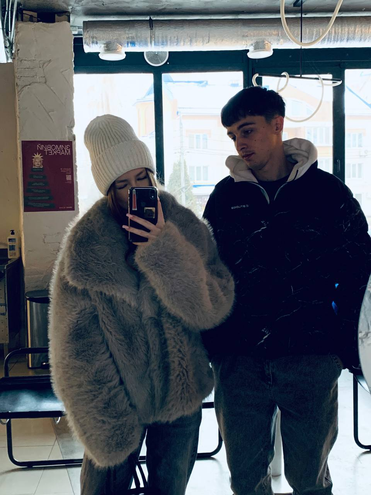

Прівет. Якшо ти це читаєш то мене вже немає в Україні.
Шо саме я хотів тобі сказати. Ці 4 тижні мені було дуже важко мені так погано ще не було. Перше шо я хочу тобі сказати пробач мене за всі мої помилки.
Причина цему всему в мені, памятаєш я казав шоб правду сказати мені треба випити але зараз на тверезу пишу цей сайтік щоб якось донести до тебе весь сенс а не просто перепискою.
Правда в тому Маріна шо ні в одних отношеніях мене так не любили, в усіх попередніх отношеніях я був найгішою людиною. А ти до мене так ставилася і мені якось було не привично, в прошлому мене тільки гнобили і обсирали ні за шо не щитали.
І проблема зараз в мені в тому шо я хочу показати шо я єбать крутий шо мною тепер так не будуть пользуватися і вести так при мені, але проблема в тому шо не перед тою людиною я це показував. Вибач мене шо поводив себе як мудак. Саме більше я за це жалію шо себе так поводив по відношеню до тебе.
Я памятаю як я просився і неоправдав нічого. Саме більше шо я хочу це справді вернути час і змінити свою поведінку до тебе. Маріна пробач мене я дуже сильно тебе люблю.
Повниш я на новий рік обіцяв женитися на тобі? Повниш як перші рази ти приходила до мене я тобі шось там помагав аби перед Таньою не спалитися. А як в себе на роботі постійно бігав до тебе як постійно проводив тебе додому. Як стояли в подєзді до пізна.
Як тебе пяну заберав і ми перший раз поцілувалися коли я тебе в мороз ніс на руках. Я повню все я повню скільки тобі нада сипати сахара в чай бо ти любиш чай який я роблю. ти любиш картошу яку я жарю.
Але з поміж цего всього харошого я повню скільки я тобі зробив больного. Пробач мене за це я жалію шо так вийшло.
Повниш коли я вийобувався і сердився і казав шо всьо, а ти питала чи уявляю я тебе з другим то Маріна нє. Я не можу просто цего прийняти.
В мене ці 4 тижні просто в середині кіпить. Я на роботі до цего ходив по всіх складах і настроєнія всім піднімав, а зараз я прийшов включив наушніки і дивлюся в точку і насправді це страшка картіна коли людина пуска. і коли питають а шо сталося я кажу просто не сплю нормально а сам понімаю шо наробив хуйні.
Маріна я помер з середини я хотів і хочу забрати тебе просто щоб пропасти. Але не вийшло в мене нічого і в себе в житті я завжди шукав когось крайнього але насам перед я сам винен шо приймав такі рішення того вже нічого не змінити.
Пробач шо все так вийшло ти найкраще шо було в моєму житті.
❤️
